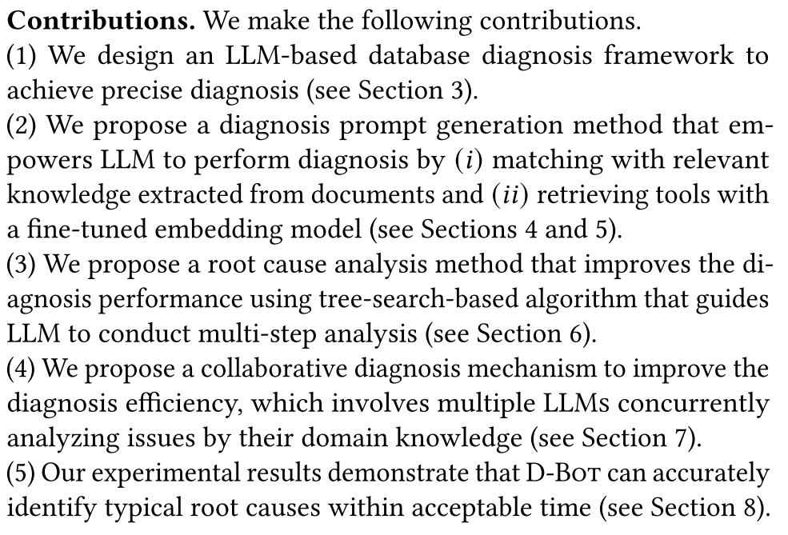
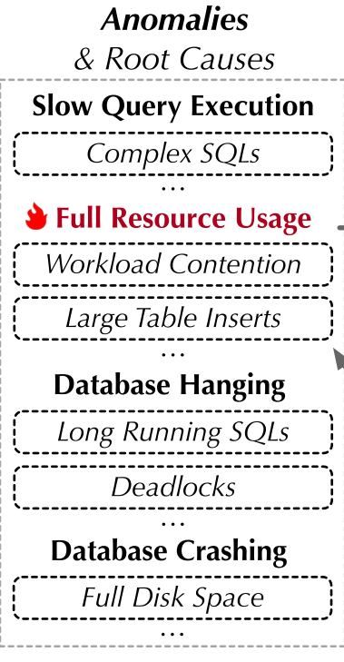
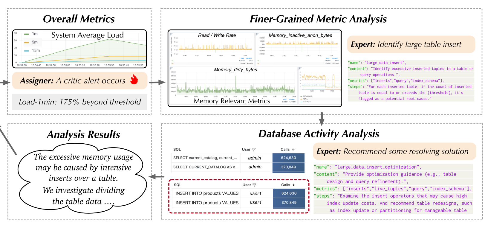
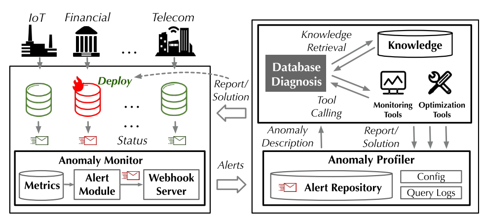
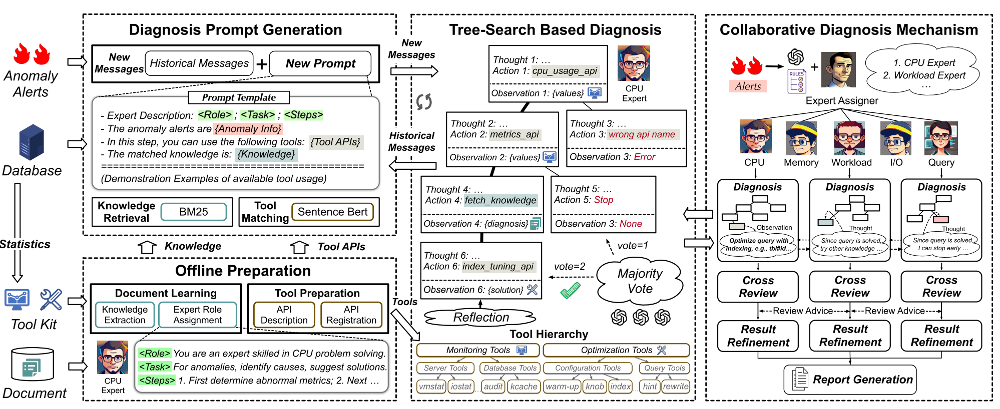
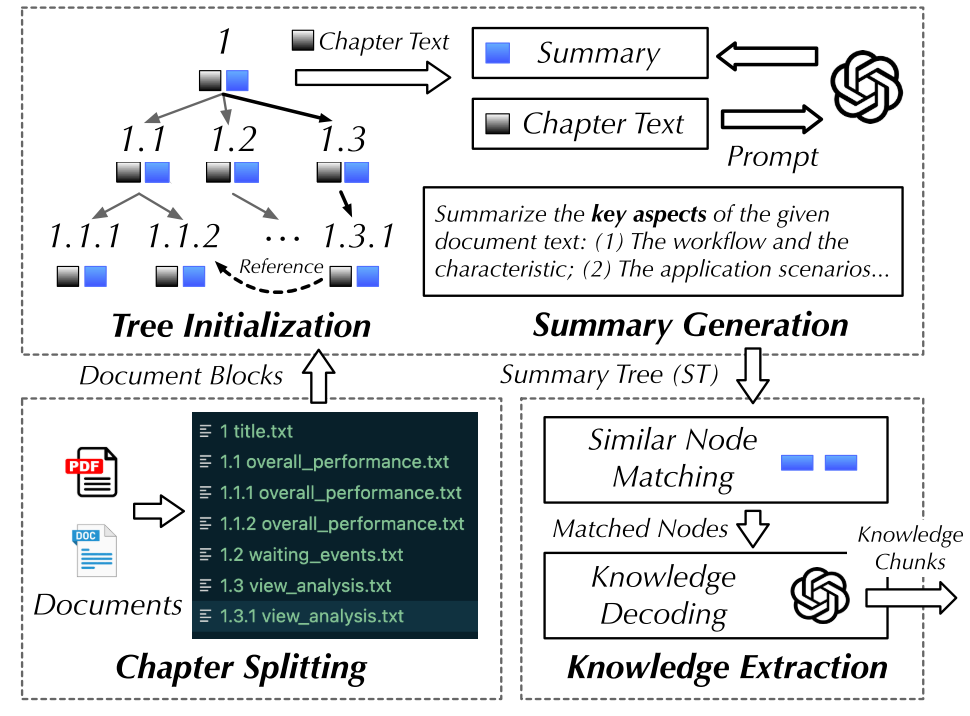
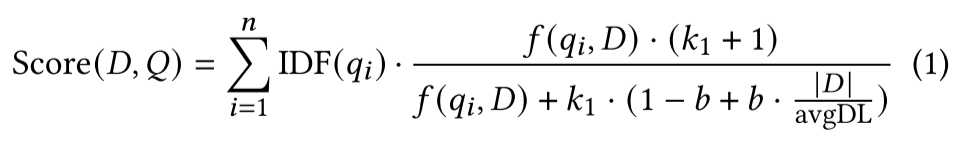
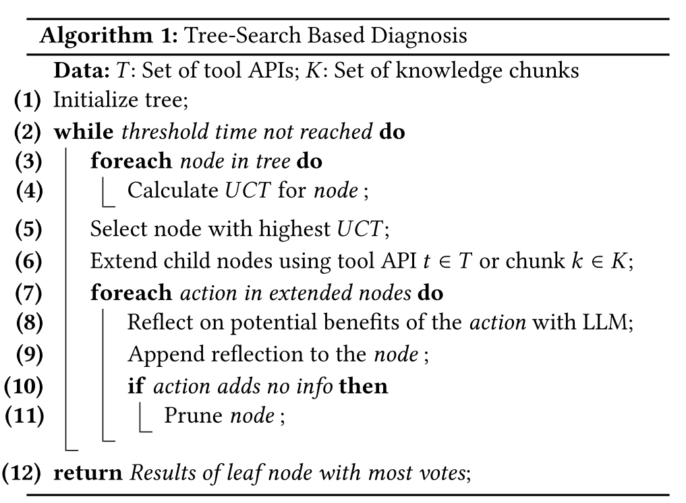

D-Bot: Database Diagnosis System using Large Language Models 论文二次阅读笔记¶
带着问题思考阅读：1、这篇论文对于不同数据库产品是怎么解决通用性问题的
2、大模型是怎么运用到系统中来的
1、从文档中提取有用的知识块，构建详细使用说明的工具层次结构，初始化用于大预言模型诊断的提示模板
2、通过匹配最相关的知识和工具->生成新的提示，LLM利用这些提示来获得监测和优化结果，以进行合理的诊断。(这一块的利用提示来监测和优化结果具体是怎么做的，感觉这个部分有些对于不同数据库的适配能力的技术)
3、引入基于树的搜索策略，引导大模型反思过去诊断，并选择最优诊断
4、对于复杂多因诊断，提出了协作诊断，多个LLM可以异步诊断来解决给定异常。
其实第三和第四部分是一个部分，都是提到LLM对于根因的诊断，区别在于第三部分主要用来解决单因路径诊断，而第四部分主要用来多个树路径协作诊断多因诊断。
文章的主要工作：

上面的意思是，论文提出了一个基于LLM的数据库诊断框架来实现精确诊断，同时提出了一个诊断的prompt生成方法，让大模型能从文档中提取相关知识和使用微调模型检索工具来进行匹配知识。还提出了一种根因分析方法，基于树搜索引导大模型多步分析，减少早停和幻觉。对于多因则采用多个LLM专家联合，每个专家各自树搜索，最后汇总结果。
第二章 前期介绍¶
数据库常见典型异常：

上述四种：慢查询，资源耗尽，数据库长时间悬挂，数据库崩溃异常关闭。
2.2介绍了一些独立数据库的根因示例。大概有6个，这里就不在赘述。¶
具体的，这些问题其实只要找到根本原因在哪，目前是可以提出一些优化操作来解决问题并恢复正常的数据库操作的。
下面的图是论文中的一个大概示例：

2.3讲了LLM的相关概念和简介，这里也不再过多赘述。¶
在这一块主要简述了LLM的技术原理，讲了LLM提示工程和大模型针对特定任务的微调。
第三章¶
第三章是核心内容，主要讲了DBOT的大部分结构和概览

这个系统的大概流程如上。
下面是这个系统的更精确的结构和技术点架构图：

这个章节大概就是介绍下系统结构的。
目前阅读到这里，我觉得文章在对于我的问题角度来看，主要是在前期离线文档准备学习的时候，来完成多数据库之间不同结构的整体学习，然后在具体的数据库中，llm会使用不同的数据库文档来选择调用对应的API，毕竟在什么样的数据库环境中，所匹配到的对应数据库知识是最相似的，LLM是能够自动选择对应数据库的API工具来调用分析的。
第四章 离线知识准备¶
4.1就是介绍了文档是怎么学习的。¶
首先：知识的格式：1、名字2、内容3、指标4、步骤
(i)“名称”帮助大型语言模型理解整体功能;(ii)“内容”解释了根本原因如何影响数据库性能(例如，由于死元组数量过多而导致的性能下降);(iii)“指标”是所涉及的指标名称列表，用于提示生成中的知识匹配(第5.1节);(iv)“步骤”提供了使用相关指标进行分析的详细程序。这允许大型语言模型模仿和执行一步一步的分析。
接着，知识压缩或者知识提取：
这一块，先讲了知识提取的一些现状，长上下文和段落其他地方的相关性。
并提出了一个方法来解决这个问题。


这一个图就详细总结了文中提出的文档知识提取方法。
1、将文档按照章节结构划分
2、从根节点开始，每一个节点有两个部分，一个是内容，一个是摘要，每个子节点就是对应的子章节，如果一个子章节太多，会进一步分块保证大小合适。然后根据内容放到LLM中，生成对应的文档知识摘要，这个摘要就是相关知识的一个类索引的作用，然后这些都做好之后
3、将相似的摘要节点进行匹配，然后后续查找的时候，从摘要开始往下一层一层查找相关内容。
注意这个地方作者也做了冗余性检查处理。
文中还做了聚类操作，将不同知识块进行聚类，将其归类到对应的异常分区或者见解中，进而进行相关知识查找加速等工作。
有效地利用和沟通这些知识块(例如，来自不同主题的专家)对诊断至关重要。
4.2工具的准备¶
因为对于异常指标的检测，正常的数据库厂商都有很多已有的指标监测工具，但是不同厂商的监测工具不完全一样。
但是文中并没有提到怎么处理不同厂商数据库指标工具不兼容的问题，而是直接：
对异常分类，然后划分当前异常类别需要使用的工具，和对应的API，并没有针对市面所有的指标收集工具或者诊断工具进行兼容性处理。
第五章 诊断提示生成¶
这一章将解释如何通过与提取的知识和工具进行匹配来自动生成诊断提示
5.1知识检索¶
除了知识模板上的已有知识之外，很多知识都需要特定的上下文来进行结合，因此文中使用了BM25这个相关性检索工具算法：
根据一组知识块的“度量”属性对它们进行排名。

这种方法的优点是，即使所涉及的度量的名称或含义并不完全相同，我们也可以匹配知识块，并且很容易在不同的监视工具甚至系统中应用提取的知识。具体的公式参数我就不过多赘述，相关论文中有讲解。
关键是文中指出这个算法对于不同监视工具的不同指标知识的相关性居然也通用，这个点倒是我觉得很厉害的一个点，一个算法的度量分数可以对不同监视工具提取出来的知识相似度计算得到普适性，这一点是我在文章开头提出的两个问题的一个小细节方案。
5.2工具匹配¶
工具涉及API，但是不同工具的API与上下文不直接相关，BM25会失效，因此文中提出了一个预训练的bert模型来微调，作为匹配诊断的工具选择方法。
该过程包括两个主要步骤，即模型微调和工具匹配。
这个微调模型的目的是学习异常和对应相关指标的关系，进而帮助筛选异常发生时需要采集的指标，使用的工具等内容。
这一块就有对于不同数据库的结构API差异的考量，专门学习了一个API的映射关系模型。具体模型不再赘述。
反正这个方法算到最后会给出TOP-k个相关的工具推荐，然后让LLM来对这些工具进行调用，得到相关执行结果，增强根本原因的诊断。
在这个地方文中使用了LLM，这对于后续我写文章的时候需要在哪些地方进行大模型的应用有一定的启发。
第六章 LLM的树搜索诊断¶
大语言模型很容易出现幻觉，产生一些错误的工具调用请求和相关诊断结果。为了解决这些问题，论文提出了树搜索的方法，该算法可以在当前操作失败或无法找到有价值的根本原因时引导大型语言模型返回到以前的操作。

树搜索算法如上。
具体算法流程不再赘述，上述讲的就是这个步骤的具体操作，注意这个是单因诊断的树搜索，在此基础上可以扩展为多因诊断，或者说是多专家协作。
这一块对于我在文章开头的两个问题，只涉及到了LLM的使用方面，让LLM参与树的每个节点生成和回退。
第七章 复杂异常的协同诊断¶
这一章节，对每个LLM都配备了对应领域的工具合集和树搜索算法。
第一步:专家准备。论文通过知识聚类结果初始化了7位大型语言模型专家(第4节)，每个专家在提示符中配备了不同的知识和必要的工具。
第二步：专家分配。节省资源，因此出现一个异常之后要先描述异常，然后分配对应专家或者专家组来处理相关任务，而不是每个异常都使用所有专家。
第三步：异步诊断。每个专家独立运行，然后使用发布-订阅机制，与其他专家异步通信互相了解最新发现。
我觉得这个机制就很好，可以解决一些突发情况，对于从来没出现过的情况具有很强的鲁棒性，这点和我的问题有一些相关性，有助于开发通用系统。
第四步：交叉评审。
第五步：生成报告。
第八章 实验结果¶
这一块主要是对不同LLM进行更换比对，以及各种消融实验，以及各种异常任务的比对。
但是重要的是，我想知道的在不同数据库结构上的通用普适性并未进行相关实验，而且无法得知这个系统在不同数据库上的迁移能力如何，但是我觉得他的系统过程中包含了对于不同数据库的知识块学习的能力，具体效果怎么样没有验证。
总结¶
对这篇论文进行二次阅读，在我的问题方面：
第一个问题的启发：可以将不同数据库的知识块分类喂给LLM让它进行需要的时候自行选择调用，还可以结合不同数据库的异常特性联合启发找到根因，我觉得这个是一个思路，可以帮助构建一个通用普适性的诊断系统，作为一个部件。
第二个问题的启发：文中在数据的一开始使用LLM来做摘要，到后面用LLM来做树节点的相关动作，再到后面LLM参与报告协作审查生成。基本上将LLM嵌套进了整个系统的每一个部分。